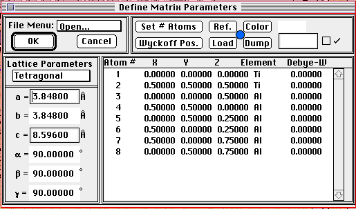
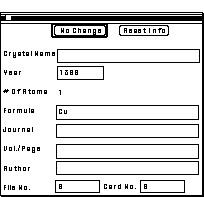

Setting Parameters
After launching Desktop Microscopist, a menu menu bar with four menus
will appear. The menus are the Apple Menu, the File Menu,
the Edit Menu and the Parameter menu. The menu labeled Parameters
allows definition of most of the parameters necessary to describe a given
calculation. Under the parameters menu, the second item marked Define Unit
Cells provides a hierarchical menu with four choices. Selecting the choice
marked Matrix... 1 will bring up the Crystal
Definition Dialog Box. The next section is a step by step journey through
the process necessary to completely define a unit cell
Defining Crystals

The Crystal Definition Dialog Box is used to specify:
- Crystal Family
Crystal Family based on the seven standard crystal families. (Cubic, Tetragonal,
Orthorhombic, Trigonal, Hexagonal, Monoclinic, Triclinic)
- The space group number
- The lattice parameters; (a,b,c and a,b,g)
- The atomic positions, either by separate entry of individual
atoms or by the use of group theory to fill in non-degenerate positions,
generated by the appropriate symmetry operations.
- The element associated with each atomic position including
fractional occupancies and partially filled sites.
- Meta-data such as periodical references, crystal name and chemical
formula.
- The color associated with the crystal when plotting graphical
representations of calculated data..i.Color;
- The Load and Dump options allow the transfer (Dump) or replacement
(Load) of the current crystal to or from any of the 4 (matrix and 3 precipitate)
Default or Local crystals. Understanding the use of the load and dump options
as well as Default vs Local parameters is critical to the effective utilization
of Desktop Microscopist. Because of its importance, this topic has a separate
section and is discussed throughout the manual.
Not all of these options are immediately available in the Dialog Box
but may be accessed by means of the appropriate button.
Example:
The following example will be the definition of the tetragonal form of Al3Ti
as given in the 1985 edition of the Pearson's
Handbook of Crystallography . Two different methods for obtaining the
necessary parameters will be reviewed. The first method will not take advantage
of the use of space group theory to aid in the definition of the crystal.
Each atomic position will be input by hand. The second method will utilize
the space group generators where Wyckoff positions are used to minimize
input effort.
Defining A Crystal Family
To define the appropriate Crystal Family, click on the pop-up menu labeled
Crystal Family. The initial default value is Cubic with the other seven
crystal families selections being: Cubic, Tetragonal, Orthorhombic, Hexagonal,
Trigonal, Monoclinic and Triclinic. In addition, the Rhomb. Set. menu item
allows selection of the Rhombohedral setting for the Trigonal set of space
groups. For purposes of this demonstration, select the second item, Tetragonal.
On the line c = 2.000 Å, the value 2.000 will have a text box around
it indicating that it is now editable text. Selecting the crystal family
determines the editable text boxes for defining the lattice parameters and
the range of available space groups. The Crystal Family should be the
first parameter set for a crystal.
NOTE: For certain crystal families, for example the monoclinic system, the
International Tables of X-ray Crystallography
defines more than one setting for each space group. At this time, Desktop
Microscopist supports only the most common setting for each space group.
If there is a question about which setting Desktop Microscopist uses in
its definition, refer to the Space Group Tables found back in the Main Menu
under the Edit Menu to view a printout of the specific space group.
After selecting the tetragonal crystal type, input the lattice parameters
for Al3Ti.
These are a = 3.848 Å and c = 8.596 Å. The tab-key will move
the text cursor from editable text box to editable text box; alternatively,
clicking the mouse in the text box will achieve the same thing.
Entering Atomic Positions
Desktop Microscopist allows the entering of atomic positions either individually
or using the Wyckoff Positions; or Point Sets;.
The Wyckoff Positions are sets of generators which have been determined
by members of the International Committee
on Tables for Crystallography. The generator set is fixed for each space
group. The first generator listed (the highest alpha numeric of the set)
for each set is the general condition. Each subsequent generator is based
on the general condition, but eliminates any duplication caused by atoms
placed at special positions (such as the origin etc.). One advantage of
using the Wyckoff Positions to define atomic positions is in the reduced
work necessary to input a group of atoms. Other advantages to the use of
space groups in crystallography are discussed in any competent book on the
subject. An excellent starting point is the text:Space
Groups for Solid State Scientists. Although the Wyckoff
Position Generators; are normally used to quickly define a unit cell,
for purposes of this tutorial, the atoms will be initially entered one at
a time. The atomic positions for Al3Ti are:
| Element | X | Y | Z | Occupancy |
Debye Waller Factor |
|---|
| Al | 0 | 0 |
0 | 100% | 0 |
| Al | 0. | .5 |
.5 | 100% | 0 |
| Al | .5 | 0 |
.5 | 100% | 0 |
| Al | .5 | .5 |
.5 | 100% | 0 |
| Al | .75 | .25 |
.75 | 100% | 0 |
| Al | .25 | .75 |
.25 | 100% | 0 |
| Ti | 0 | 0 |
0. | 100% | 0 |
| TI | .5 | .5 |
.5 | 100% | 0 | Atomic Positions
for Al3Ti
To input these positions into Desktop Microscopist, the total number of
atoms must first be specified. Clicking on the button marked Set # Atoms
brings up the Set # Atoms
dialog box.
- Set the number to 8 and either press or click on the OK button.
The program will return to the crystal definition dialog box with seven
additional Cu atoms positioned at the origin appearing in the Atomic Position
List box.
- Under the Z column click on the first 0.000 value. 0.000 will appear
and be selected (highlighted with a black background) in the editable text
box directly above the atomic position list.
- Type in the value .5 and press the key or click on the small
box to the right of the editable text box. This will enter the value .5
into the previously selected atomic position and the next (element) position
will be highlighted.
- The value (Cu) will now appear in the editable text box. Type in either
Al or AL into this box and press .
- In this manner the remaining atomic positions may be specified.
- Before proceeding, the question of occupancy ;must be addressed.
In general, most crystals are defined with each atom position having 100%
occupancy.
- Each atomic position is always filled by the designated atom.
- However, in real materials, certain lattice sites may be only partially
occupied or occupancy may be shared by more than one element. Desktop Microscopist
handles this problem by allowing the definition of hybrid atoms Hybrid
Atom; which are the weighted average of the occupying atoms. For each
crystal, 29 different hybrid atoms are allowed, a hybrid atom can be used
as many times as required. A hybrid atom may contain up to 10 different
elements..
- To define a hybrid atom, double click on the element symbol for the
desired atomic position and follow the directions.
Notes:
- The Atomic Position list box, although similar to a spreadsheet,
does not support arrows, tab or the return key.
- Unlike Diffract, the number of atomic positions is not limited
to 250. Theoretically, as many as 32,000 atomic positions are available.
In reality, memory and speed considerations provide practical limitations.
Inputting Ionic Elements
Desktop Microscopist allows ionic elements; to be designated. To designate
an ionic element, type in the elemental symbol and the ionic state. (Negative
values must be indicated... Al2 will be converted to Al+2).
An ionic state for an element may be entered even if there is no corresponding
data for that ionic state, in this case the parameters for the neutral atom
will be used for calculations.
Thus, if there are no atomic scattering factors currently stored for Al+2
, diffraction patterns will be calculated using the scattering factors for
Al; there will be no indication that this has occurred.
Use the Atomic Info option under the Edit Menu to view parameters available
for each element. Desktop Microscopist allows the editing of atomic scattering
values using the atomic scattering dialog
box.
Setting Debeye-Waller Factors
Debeye-Waller factors can be set. This can be accomplished by either manually
inputing a value or double clicking on the Debye-Waller row of interest.
Double clicking will bring up a Dialog Box
that helps calculate a Debye-Waller factor based on a stored Debye temperature,
the atomic weight and the desired experimental temperature.
Entering Meta-data or Bibliographic data
To add this data, click on the Ref button. It will bring up the Bibliographic
Data Dialog Box
Each of the fields is self explanatory. The only limitations are that the
year, the file number and the card number must be numeric. Otherwise, although
it is encouraged to use the fields as specified, any data desired may be
stored there.
For purposes of this tutorial, enter Titanium Aluminide <tab> 1939
<tab> Al3Ti <tab> Zeitschrift Fuer Anorganische Und Allgemeine
Chemie <tab> 242/1 <tab> Brauer <tab> 1 <tab> 1.

Bibliographic Data Dialog Box
Desktop Microscopist is limited in its storage capability of bibliographic
data. It is recognized that as programs become increasingly more rich with
respect to capabilities and level of interactivity, it will become increasingly
more important to allow methodology for accurate flagging of different but
similar results. This flagging should include original sources, potentially
experimental technique etc.
After setting the bibliographic data, click on the Reset Info button
to return to the main dialog box.
Printing Unit Cell Data
To obtain a printout of the crystal information, go to the File pop-up
menu and select Print. Follow the standard Macintosh procedure
for obtaining a printout of the crystal. This pop-up menu may also be used
to save the crystal in Desktop Microscopist or Diffract formats and open
a new crystal in either Desktop Microscopist or Diffract formats. To save
the currently defined crystal in different format, select the Save As option
and a hierarchical menu will appear. Choose the desired file format specification.
If the crystal is saved in an older Diffract format, all Meta-data, space
group information and Wyckoff (Point Set) positions will be lost! Save the
crystal now.
Load And Dumping Crystal Data:
The two remaining buttons, Load and Dump, are concerned with Desktop Microscopist's
methods for allowing transfer of pertinent data between windows and crystal
objects. This subject is also covered in further detail in the section on
Load/Dumping information.
Defining A Precipitate Crystal
The definition of the Al3Ti crystal is now complete. Click on the OK button
to close the matrix definition box. As an exercise, go to the Ppt. #1 crystal
definition dialog box and define the first precipitate type as aluminium.
This crystal is cubic, has a lattice parameter of 4.048, space group is
Fm-3m (#225), with a Wyckoff Position of a4 (generating atom is positioned
at the origin). Save and close the crystal dialog box.
At this point, the Al3Ti unit cell has been sufficiently defined to calculate
diffraction patterns, plot stereographic projections etc. This definition
is sufficient for most purposes. For large unit cells in particular, further
functionality may be realized with the use of space group designations.
Utilization of the space groups to aid in the input of atomic positions
provide a significant time savings and increased accuracy.
Author: J.ames T.
Stanley
 Desktop
Manual
Desktop
Manual
Distributed By: Virtual
Labs
Last Updated:1/12/96 Sat, Apr 27, 1996